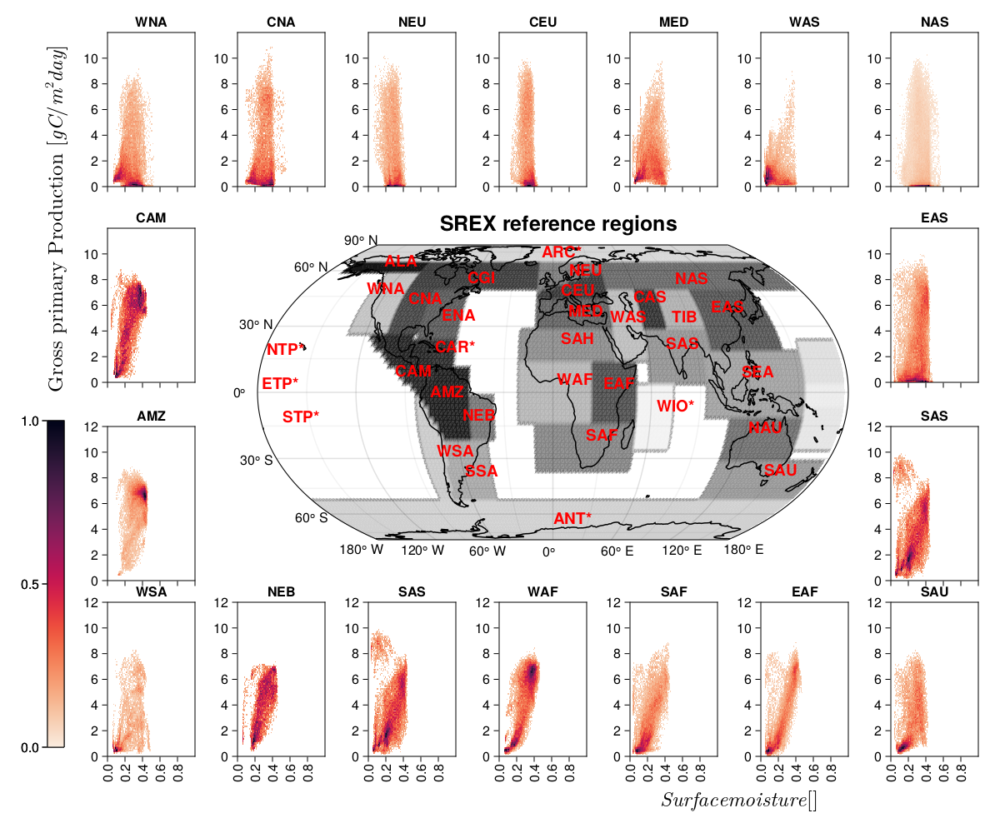

Examples from the ESDL paper¤
Earth Syst. Dynam., 11, 201–234, 2020 doi¤
NOTE: This section is based on the case studies from the paper "Earth system data cubes unravel global multivariate dynamics" by Mahecha, Gans et al. (2019). Original scripts are available here.
- We have slightly adjusted the scripts. A few differences are that these new scripts are updated to Julia 1.9, and the YAXArrays.jl package is used.
- The dataset has been updated but it has less available variables. Therefore the results might differ.
- The calculations are performed with a very coarse spatial (2.5°) and temporal resolution (monthly).
- These are examples for illustrative purposes of the packages and do not intend any deeper scientific interpretation. For scientific analysis use the higher spatio-temporal resolution datasets.
Case study 4:¤
- The code is written based on Julia 1.9
- Normal text are explanations referring to notation and equations in the paper
# comments in the code are intended to explain specific aspects of the coding- New steps in workflows are introduced with bold headers
Load requiered packages
using Pkg
# for operating data cubes
using Zarr, YAXArrays, NetCDF
using DimensionalData
using EarthDataLab
# for data analysis
using WeightedOnlineStats
using Statistics, Dates, SkipNan
using DataFrames, Downloads
Next we get a handle to the Earth System Data Cube we want to use, which provides a description of the cube:
cube_handle = esdc(res="tiny")
144×72×989×42 YAXArray{Union{Missing, Float32},4} with dimensions:
Dim{:lon} Sampled{Float64} -178.75:2.5:178.75 ForwardOrdered Regular Points,
Dim{:lat} Sampled{Float64} -88.75:2.5:88.75 ForwardOrdered Regular Points,
Ti Sampled{DateTime} DateTime[1979-01-09T00:00:00, …, 2021-12-27T00:00:00] ForwardOrdered Irregular Points,
Dim{:Variable} Categorical{String} String[sensible_heat, potential_evaporation, …, net_ecosystem_exchange, snow_sublimation] Unordered
units: mm d^-1
Total size: 1.6 GB
Here we define two subcubes for gross primary productivity and for surface moisture
gpp = cube_handle[variable = At("gross_primary_productivity"), time = 2003:2012]
moisture = cube_handle[variable = At("surface_moisture"), time = 2003:2012]
144×72×230 YAXArray{Union{Missing, Float32},3} with dimensions:
Dim{:lon} Sampled{Float64} -178.75:2.5:178.75 ForwardOrdered Regular Points,
Dim{:lat} Sampled{Float64} -88.75:2.5:88.75 ForwardOrdered Regular Points,
Ti Sampled{DateTime} DateTime[2003-01-09T00:00:00, …, 2012-12-26T00:00:00] ForwardOrdered Irregular Points
units: mm d^-1
Total size: 9.1 MB
The objective is to estimate histograms of gross primary productivity and surface moisture and split them by AR5 region. We first download a shapefile defining these regions.
regions = Cube("https://s3.bgc-jena.mpg.de:9000/misc/IPCCregions_2d5.zarr")
144×72 YAXArray{Union{Missing, Float32},2} with dimensions:
Dim{:lon} Sampled{Float64} -178.75:2.5:178.75 ForwardOrdered Regular Points,
Dim{:lat} Sampled{Float64} -88.75:2.5:88.75 ForwardOrdered Regular Points
units: ID
name: IPCCRegions
Total size: 40.5 KB
In order to compute some aggregate statistics over our datasets we join the 3 data cubes into a single iterable table. The data is not loaded but can be iterated over in an efficient manner which is chunk-aware. Additionally we need the latitude values of the Table to compute the weights of our aggregation which represent the grid cell size.
t = CubeTable(gpp=gpp, moisture=moisture, region=regions)
Datacube iterator with 1 subtables with fields: (:gpp, :moisture, :region, :lon, :lat, :Ti)
If the concept of this table is still a bit opaque, we can visualize the table.
using DataFrames, Base.Iterators
df = DataFrame(t[1])
summary(df)
first(df,5)
| Row | gpp | moisture | region | lon | lat | Ti |
|---|---|---|---|---|---|---|
| Float32? | Float32? | Float32? | Float64 | Float64 | DateTime | |
| 1 | missing | 0.0885 | 28.0 | -178.75 | -88.75 | 2003-01-09T00:00:00 |
| 2 | missing | 0.0885 | 28.0 | -176.25 | -88.75 | 2003-01-09T00:00:00 |
| 3 | missing | 0.0885 | 28.0 | -173.75 | -88.75 | 2003-01-09T00:00:00 |
| 4 | missing | 0.0885 | 28.0 | -171.25 | -88.75 | 2003-01-09T00:00:00 |
| 5 | missing | 0.0885 | 28.0 | -168.75 | -88.75 | 2003-01-09T00:00:00 |
here we define the climare reference from the "Report on Managing the Risks of Extreme Events and Disasters to Advance Climate Adaptation (SREX)"SERX regions" by IPCC
# reigions' table with names, labels (abbreviations), ID, and coordinates
regions_df = ["region" "label" "id" "lon" "lat";
"Alaska/N.W. Canada" "ALA" 1 -136.5 60.3;
"Amazon" "AMZ" 2 -75.04506 -3.772654;
"Central America/Mexico" "CAM" 3 -96.24961 5.633803;
"small islands regions Caribbean" "CAR*" 4 -73.4605 16.31368;
"Central Asia" "CAS" 5 55 40
"Central Europe" "CEU" 6 5.74266 43.588774;
"Canada/Greenland/Iceland" "CGI" 7 -63.5 50.5;
"Central North America" "CNA" 8 -99 39.3
"East Africa" "EAF" 9 30.5 0;
"East Asia" "EAS" 10 105.5 35;
"East North America" "ENA" 11 -72.5 31;
"South Europe/Mediterranean" "MED" 12 10 33;
"North Asia" "NAS" 13 90 50;
"North Australia" "NAU" 14 122.5 -20;
"North-East Brazil" "NEB" 15 -56 -14;
"North Europe" "NEU" 16 12.27682 54.462817;
"Southern Africa" "SAF" 17 21 -23.2;
"Sahara" "SAH" 18 5 20;
"South Asia" "SAS" 19 70.58108 17.905405;
"South Australia/New Zealand" "SAU" 20 145 -40;
"Southeast Asia" "SEA" 21 115 5;
"Southeastern South America" "SSA" 22 -60.4941 -40.763987;
"Tibetan Plateau" "TIB" 23 77.5 30;
"West Africa" "WAF" 24 2.5 1.8;
"West Asia" "WAS" 25 37 30;
"West North America" "WNA" 26 -131.5 44.3;
"West Coast South America" "WSA" 27 -75.88257 -30.783;
"Antarctica" "ANT*" 28 0 -70;
"Arctic" "ARC*" 29 -10 66.75;
"Pacific Islands region[2]" "NTP*" 30 182.5 15;
"Southern Topical Pacific" "STP*" 31 192.5 -15;
"Pacific Islands region[3]" "ETP*" 32 182.5 0;
"West Indian Ocean" "WIO*" 33 63.5 -10]
# subset solely the region labels for further use
labels_ipcc = regions_df[2:end,2]
33-element Vector{Any}:
"ALA"
"AMZ"
"CAM"
"CAR*"
"CAS"
"CEU"
"CGI"
"CNA"
"EAF"
"EAS"
⋮
"WAS"
"WNA"
"WSA"
"ANT*"
"ARC*"
"NTP*"
"STP*"
"ETP*"
"WIO*"
Now comes the actual aggregation. First we generate an empty WeightedHist for every SREX region. Then we loop through all the entries in our table and fit the gpp/moisture pair into the respective histogram. Never will the whole cube be loaded into memory, but only one chunk is read at a time. In the end we create a new (in-memory) data cube from the resulting histograms.
Here we create an empty 2d histogram for every SREX region
function weightedhistograms_by_region(df, labels)
hists = [WeightedHist((0.0:0.1:12,0:0.01:1)) for _ in eachindex(labels_ipcc)]
for row in Tables.rows(df)
# if all data are there
if !any(ismissing, (row.gpp, row.moisture, row.region))
# we select the appropriate histogram according to the region the data point belongs to
h = hists[Int(row.region)]
# and we fit the two data points to the histogram, weight by cos of lat
fit!(h, (row.gpp, row.moisture), cosd(row.lat))
end
end
# we create the axes for the new output data cube
midpointsgpp = 0.05:0.1:11.95
midpointsmoist = 0.005:0.01:0.995
newaxes = (
Dim{:SREX}([labels[i] for i in 1:33]),
Dim{:GPP}(midpointsgpp),
Dim{:Moisture}(midpointsmoist)
)
# and create the new cube object
data = [WeightedOnlineStats.pdf(hists[reg],(g,m)) for reg in 1:33, g in midpointsgpp, m in midpointsmoist]
data = replace(data,NaN => missing, 0 => missing)
YAXArray(newaxes, data)
end
r = weightedhistograms_by_region(df, labels_ipcc);
rdata = mapslices(r,dims=("GPP","Moisture")) do xin
xin ./ maximum(skipmissing(xin))
end
120×100×33 YAXArray{Union{Missing, Float64},3} with dimensions:
Dim{:GPP} Sampled{Float64} 0.05:0.1:11.95 ForwardOrdered Regular Points,
Dim{:Moisture} Sampled{Float64} 0.005:0.01:0.995 ForwardOrdered Regular Points,
Dim{:SREX} Categorical{String} String[ALA, AMZ, …, ETP*, WIO*] Unordered
Total size: 3.02 MB
Plotting - Figure 8 in the paper¤
To generate the publication-quality plots we use Makie plotting tools with the following code, which does not demonstrate any EarthDataLab capabilities but is included here for reproducbility:
using CairoMakie, GeoMakie
CairoMakie.activate!(type = "png")
using MakieTeX, LaTeXStrings
# heatmaps
ygpp = 0.05:0.1:11.95
xmoist = 0.005:0.01:0.995
crange = (0,1)
fig = Figure(resolution = (1200, 1000))
gtop = fig[1,1] = GridLayout()
gcen = fig[2:3,1] = GridLayout()
gbot = fig[4,1] = GridLayout()
# top row
gx = gtop
for col in 1:7
id = [26 8 16 6 12 25 13]
ax = Axis(gx[1, col], title=labels_ipcc[id[col]],
xticklabelsvisible=false, xticks=0:0.2:0.9, ylabel="", yticks=0:2:10,
xgridvisible=false, ygridvisible=false,
width = 105, height = 185)
# note that we inverted the data matrix to plot surface moisture on the x-axis
# and gpp on the y-axis
heatmap!(ax, xmoist, ygpp, sqrt.(rdata[:,:,id[col]].data');
colormap=Reverse(:seaborn_rocket_gradient), colorrange=crange)
end
# bottom row
gx = gbot
for col in 1:7
id = [27 15 19 24 17 9 20]
ax = Axis(gx[1, col], title=labels_ipcc[id[col]],
xlabel="", xticks=0:0.2:0.9, xticklabelrotation = pi/2,
xtickformat="{:.1f}", ylabel="", yticks=0:2:12,
xgridvisible=false, ygridvisible=false,
width = 105, height = 185)
heatmap!(ax, xmoist, ygpp, sqrt.(rdata[:,:,id[col]].data');
colormap=Reverse(:seaborn_rocket_gradient), colorrange=crange)
end
# central rows
gx = gcen
for col in (1,7)
# central top row
id1 = [3 0 0 0 0 0 10]
ax = Axis(gx[1, col], title=labels_ipcc[id1[col]], xticklabelsvisible=false,
xticks=0:0.2:0.9, ylabel="", yticks=0:2:10,
xgridvisible=false, ygridvisible=false,
width = 105, height = 185)
ht = heatmap!(ax, xmoist, ygpp, sqrt.(rdata[:,:,id1[col]].data');
colormap=Reverse(:seaborn_rocket_gradient), colorrange=crange)
# central bottom row
id2 = [2 0 0 0 0 0 19]
ax2 = Axis(gx[2, col], title=labels_ipcc[id2[col]], xticklabelsvisible=false,
xlabel="", xticks=0:0.2:1.9, xticklabelrotation = pi/2,
xtickformat="{:.1f}", ylabel="", yticks=0:2:12,
xgridvisible=false, ygridvisible=false,
width = 105, height = 185)
ht = heatmap!(ax2, xmoist, ygpp, sqrt.(rdata[:,:,id2[col]].data');
colormap=Reverse(:seaborn_rocket_gradient), colorrange=crange)
cb = Colorbar(fig[3:4,0], ht; width=20, height=Relative(0.95),flipaxis = false)
end
# map of SREX regions
titlein = "SREX reference regions"
ax = GeoAxis(gx[1:2,2:6]; coastlines = true, lonlims=(-180, 180), latlims = (-90,90))
sf = GeoMakie.surface!(ax, -180:2.5:180, -90:2.5:90, regions[:,:].data; shading = false,
colormap = (:grays, 0.85,), colorrange=(0,33), rev=true)
Label(gx[0,3], titlein, fontsize=25, width = Relative(0.5), padding=(80, 100, -55, 0),
valign=:bottom, font=:bold)
for i in 2:size(regions_df)[1]
tex = text!(regions_df[i,4], regions_df[i,5], text=regions_df[i,2],
color=:red, fontsize=19, font=:bold)
translate!(tex, 0,0,100)
end
# additional labels
label_gpp = L"Gross primary Production [$gC/m^{2}day$]"
label_soil = L"Surface moisture []"
Label(gbot[1, 4:7, Bottom()], label_soil, valign=:bottom, fontsize=25,
font=:bold, padding=(0, 0, 10, 40))
Label(fig[1:2,0, Bottom()], label_gpp, valign=:top, halign =:center,
fontsize=25, font=:bold, padding=(0, 0, 0, -375), rotation=pi/2)
save("study4.png", fig) # hide # because something is off [bug!] with the default output file format
CairoMakie.Screen{IMAGE}

# separate function for plotting only the map
function geoplotsfx(xin, titlein, crange, cmap, df)
fig = GeoMakie.Figure(fontsize=17, resolution = (810, 550)) #(710,600)
ax = GeoAxis(fig[1,1]; coastlines = true,
lonlims=(-180, 180), latlims = (-90,90),
)
sf = GeoMakie.surface!(ax, -180:2.5:180, -90:2.5:90, xin; shading = false,
colormap = (cmap, 0.85,), colorrange=crange, rev=true)
Label(fig[0,1], titlein, fontsize=25, width = Relative(0.5),
padding=(80, 0, -120, 0), valign=:bottom, halign =:center, font=:bold)
for i in 2:size(regions_df)[1]
tex = text!(df[i,4], df[i,5], text=df[i,2], color=:red, fontsize=19, font=:bold)
CairoMakie.translate!(tex, 0,0,100)
end
return(fig)
end
geoplotsfx (generic function with 1 method)
This page was generated using Literate.jl.